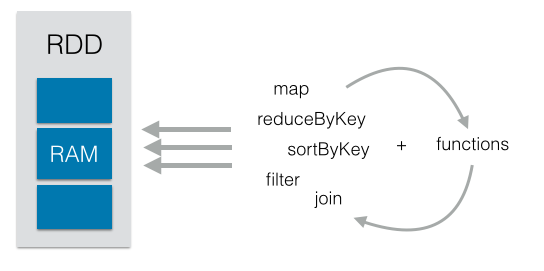

Technology for the Changing Landscape of HPC
 xkcd
xkcd
Monte Lunacek
Research Computing University of Colorado
http://mlunacek.github.io/ieee_cluster_2013/
xkcd
Monte Lunacek
Research Computing University of Colorado
Good to be back!
Work
Hiding the details of parallel computing with python
Hope you are inspired to use these tools!

Ioan Raicu, Many-Task Computing: Bridging the Gap between High Throughput Computing and High Performance Computing

What tools do you currently use?
import sys
import numpy as np
import tables as tb
def read_h5(filename):
with tb.openFile(filename, mode = "r") as h5:
return h5.root.x.read()
if __name__ == '__main__':
A = read_h5(sys.argv[1])
B = read_h5(sys.argv[2])
C = np.dot(A,B)

What's the most efficient way to run many simulations?
Example: IDL
sh /home/chmo1906/idl_wrapper.sh 020000 MHD_MEAN_80G MHD_MEAN
idl_wrapper.sh
#!/bin/bash
job_name=Spectrum_$2_6x3Mn_8km_ng_$1
cd /lustre/janus_scratch/chmo1906/rhsc3d/run_$3_6x3Mm_8km_ng$1
idl << EOF
.r readall
$job_name = SPECTRUM
SAVE, $job_name, FILENAME = '$2_6x3Mm_8km_ng_$1.SAV'
SAVE, $job_name, FILENAME = '/projects/chmo1906/IDL/$2_6x3Mm_8km_ng_$1.SAV'
exit
EOF
Write down what you want to do
sh /home/chmo1906/run_scripts/idl_wrapper.sh 016000 MHD_MEAN_80G MHD_MEAN
sh /home/chmo1906/run_scripts/idl_wrapper.sh 017000 MHD_MEAN_80G MHD_MEAN
sh /home/chmo1906/run_scripts/idl_wrapper.sh 018000 MHD_MEAN_80G MHD_MEAN
...
sh /home/chmo1906/run_scripts/idl_wrapper.sh 100000 MHD_MEAN_80G MHD_MEAN
Pass it to the load_balance
module load load_balance
mpirun load_balance -f /home/chmo1906/cmdlistload_balance.py: Successful... can create a lot of data.
Sometimes one of the parallel jobs will fail and its output files will not be written to the expected location. --qiime parallel
Example workflow
Different requirements

c = Client()
print c.ids #list of enginesFault-tolerance, elasticity, and persistence
map abstractionPython acquired lambda, reduce, filter and map, courtesy of a Lisp hacker who missed them and submitted working patches. -Guido van Rossum
def square(x):
return x*x
numbers = [1,2,3]
def map_squares(nums):
res = []
for x in nums:
res.append( square(x) )
return resor...
results = map(square, numbers)map is the key to parallelism in python
Serial code
results = map(square, numbers)IPython Parallel
c = Client()
lb = c.load_balanced_view()
lb.retries = len(c.ids)
results = lb.map(square, numbers)Multiprocessing
from multiprocessing import Pool
pool = Pool(5)
results = pool.map(square, numbers)Scoop
from scoop import futures
results = futures.map(square, numbers)
Monte Lunacek et al. The scaling of many-task computing approaches in python on cluster supercomputers
Brings the algorithm to the data
Interactive for scala and python
print rdd.collect()
rdd = rdd.map( lambda x: (x, 1))
print rdd.collect()
rdd = rdd.reduceByKey(lambda a, b: a + b)
print rdd.collect()
And add a sort..
rdd = rdd.map(lambda x: (x[1], x[0])).sortByKey(False)
print rdd.collect()
results = rdd.map( lambda x: (x, 1))\
.reduceByKey(lambda a, b: a + b)\
.map(lambda x: (x[1], x[0]))\
.sortByKey(False)\
.collect()
print results
40 nodes and 650 GB of data in minutes
def closest_point(p, centers):
dist = map(lambda x: np.sum((p - x) ** 2), centers)
return np.argmin(dist)
k_points = data.take(3)
temp_dist = 1.0
while temp_dist > 0.001:
closest = data.map(
lambda p : (closest_point(p, k_points), (p, 1)))
point_stats = closest.reduceByKey(
lambda (x1, y1), (x2, y2): (x1 + x2, y1 + y2))
new_points = point_stats.map(
lambda (x, (y, z)): (x, y / z)).collect()
temp_dist = sum(map(lambda (x,y): np.sum((k_points[x] - y) ** 2),
new_points))
for (x, y) in new_points:
k_points[x] = y
Task-farming
Scientific Analysis with Spark
General profiling tools
Maybe your toolbox is bigger?
IPython tools: Scripts for lauching IPython on a cluster
Remotenb : Run IPython notebooks on a cluster
Saga IPython Example Elastic resources